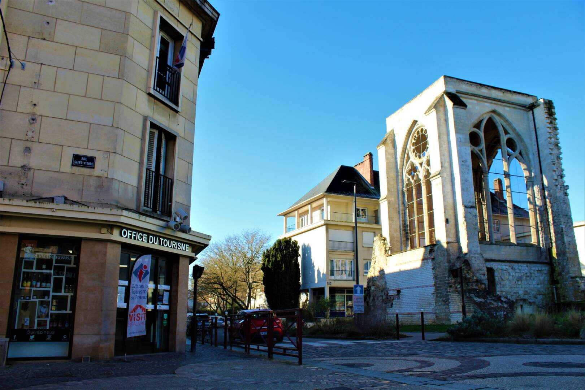

Tourisme et Culture

OFFICE DE TOURISME
Horaires d'ouverture :
D'octobre à avril : Le lundi de 14h à 18h et du mardi au samedi d e 09h30 à 12h30 et de 13h30 à 18h.
D'avril à octobre : Le lundi de 14h à 18h, du mardi au samedi de 09h30 à 12h30 et de 13h30 à 18h et les dimanches et jours fériés de 10h à 13h et de 14h à 17h30.
Coordonnées :
Adresse : 1, rue Beauregard 60000 Beauvais Cedex Tél : 03 44 15 30 30 Fax : 03 44 15 30 31